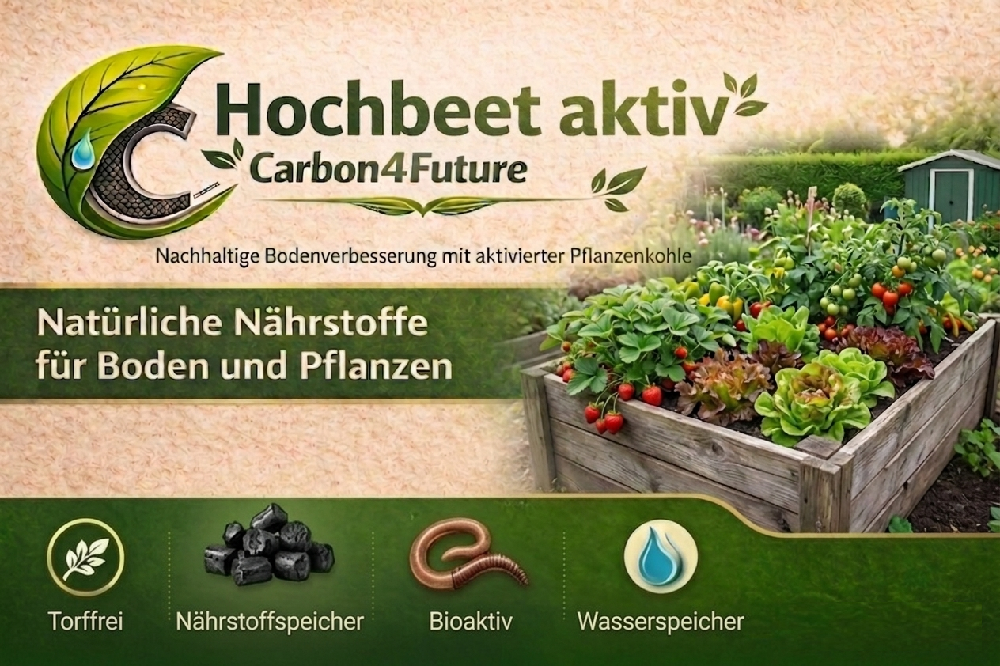

TOP-SELLER
Hochbeet aktiv
✓ EBC zertifizierte Pflanzenkohle · 20 %
Schnelle Nährstofffreisetzung für üppiges Wachstum. Ideal für Starkzehrer wie Tomaten und Zucchini.
Empfohlen: 10 L
Technische Daten
EBC Pflanzenkohle20 %
Org. Rinderdünger–
Humuserde + Mikroorganismen–
N 0,38 %
P₂O₅ 0,28 %
K₂O 0,5 %
pH 6,5
Bio 85 %